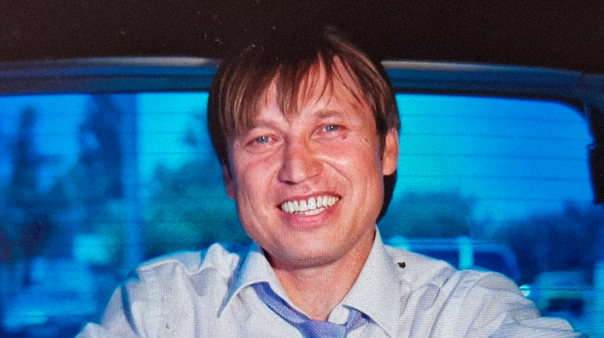

Биография
Игорь Вихорьков родился 29 декабря в городе Алматы, Казахстан. Начал свою интернет-деятельность в 2018 году с каверов на известные песни в TikTok, однако из-за частых блокировок перешел на YouTube и Telegram, где продолжает радовать аудиторию своим уникальным контентом.
Карьера
Игорь известен своими провокационными песнями и эксцентричным творчеством. Его композиции часто содержат нестандартный юмор и оригинальные идеи, что привлекает разнообразную аудиторию.
Популярные песни
- "You're not my wh***"
- "Ни капли в рот"
Оп-Оп Сприподнизовское Движение (ООСД)
Игорь является основателем меметического движения ООСД, известного своей уникальной философией и активным онлайн-сообществом. Движение привлекает внимание благодаря своей необычной концепции и активному взаимодействию с подписчиками.